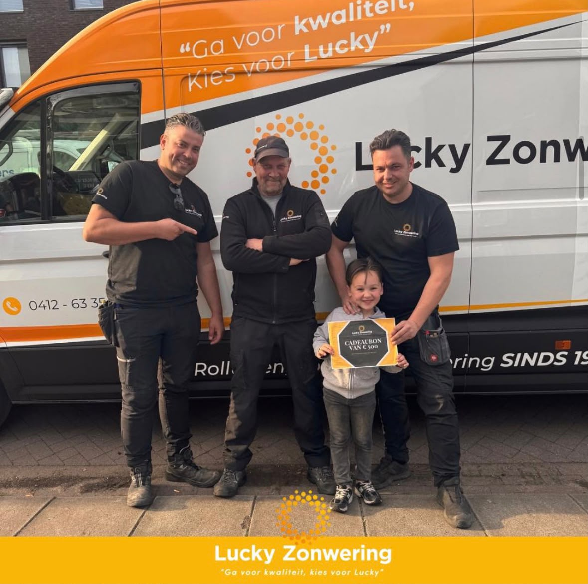

Op zoek naar zonwering in Oss? Lucky Zonwering is uw lokale specialist sinds 1975. Vanuit onze werkplaats aan de Ussenstraat leveren en monteren wij screens, rolluiken, terraszonwering en overkappingen — met eigen monteurs, eerlijk advies aan huis en een 5,0 op Google.
Wonen in Oss betekent genieten van uw huis en tuin — maar ook omgaan met felle zon, oplopende warmte achter het glas en behoefte aan privacy aan de straatkant. De juiste zonwering lost dat in één keer op. Als echt Osse familiebedrijf kennen wij de woningen in onze stad: van de jaren-dertig woningen in het centrum tot de nieuwbouw in Ruwaard, Schadewijk en de buitenwijken. Daardoor weten wij precies welke zonwering bij úw situatie past.
Geen webshop op afstand, maar een vaste contactpersoon die langskomt, inmeet en de montage zelf verzorgt. Hieronder leest u welke zonwering wij in Oss leveren, hoe onze werkwijze eruitziet en waarom lokale klanten al bijna vijftig jaar voor Lucky kiezen.
Iedere woning en elke gevel vraagt om een eigen oplossing. Tijdens het gratis advies aan huis bekijken wij de oriëntatie op de zon, de raamtypes en uw wensen op het gebied van warmte, privacy en uitzicht. Dit zijn de soorten zonwering die wij in Oss het meest plaatsen:
Strakke, naar buiten geplaatste screens houden de hitte tegen vóór die het glas bereikt, terwijl u van binnenuit gewoon naar buiten blijft kijken. Ideaal voor grote raampartijen en serres op het zuiden.
Op maat gemaakte rolluiken uit onze eigen werkplaats in Oss verduisteren de slaapkamer, houden warmte buiten in de zomer en binnen in de winter, en geven uw woning extra inbraakwering.
Met knikarmschermen, uitvalschermen, een terrasoverkapping of pergola maakt u van uw terras een schaduwrijke buitenkamer. Geniet langer buiten, ook bij fel zonlicht of een lichte bui.
Twijfelt u welke oplossing het beste past? Stel online uw zonwering op maat samen of vraag een gratis offerte aan.
Wij komen gratis en vrijblijvend bij u langs, meten nauwkeurig in en denken eerlijk met u mee over type, kleur en bediening — handmatig, elektrisch of met slimme app-bediening. Daarna ontvangt u een heldere offerte op maat, zonder verplichtingen.

Onze eigen, ervaren monteurs plaatsen uw zonwering netjes en veilig en laten uw woning schoon achter. Geen wisselende onderaannemers, maar vaste vakmensen uit de regio — met korte lijnen en goede nazorg lang na de montage.

Ons bedrijf zit aan de Ussenstraat 26A in Oss. Doordat onze werkplaats, voorraad en monteurs allemaal in de stad zitten, zijn wij snel ter plaatse — voor advies, montage én service. Een kapotte motor of een storing? Dankzij onze eigen onderdelenvoorraad bent u meestal binnen korte tijd weer geholpen, ook bij zonwering van andere merken.
Naast Oss zelf zijn wij dagelijks actief in de directe omgeving. Onze monteurs combineren afspraken in de buurt, zodat u snel aan de beurt bent en de prijs scherp blijft.
Benieuwd naar ons werk in de buurt? Bekijk onze projecten in Oss en omgeving of lees waarom klanten voor Lucky kiezen.
De prijs van zonwering hangt af van het type, de maatvoering en de bediening. Een enkele screen is voordeliger dan een complete terrasoverkapping. Wij meten gratis bij u in Oss in en geven daarna een heldere offerte op maat, zonder verplichtingen.
Doordat onze werkplaats en monteurs in Oss zitten, zijn de lijnen kort. Na het inmeten volgt meestal binnen enkele weken de montage. De exacte levertijd hoort u tijdens het adviesgesprek.
Ja, voor woningen en bedrijven in Oss en omgeving komen wij gratis en vrijblijvend inmeten en adviseren. U betaalt pas wanneer u akkoord gaat met de offerte.
Buitenzonwering zoals screens, knikarmschermen en terraszonwering houdt de warmte tegen vóór die het glas raakt en is daardoor het meest effectief tegen hitte. Rolluiken bieden daarnaast verduistering en extra isolatie in de winter.